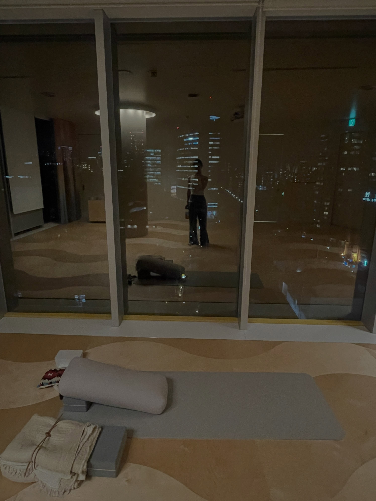
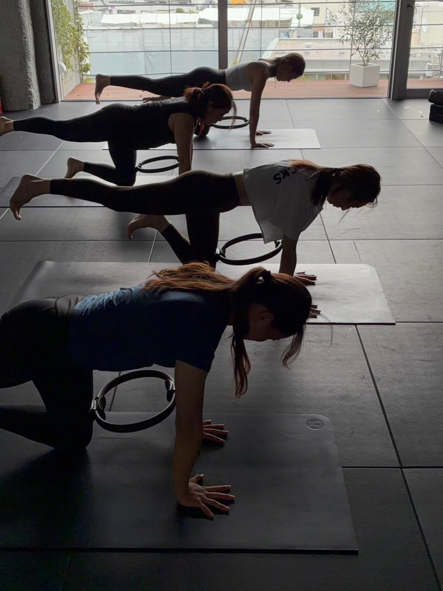
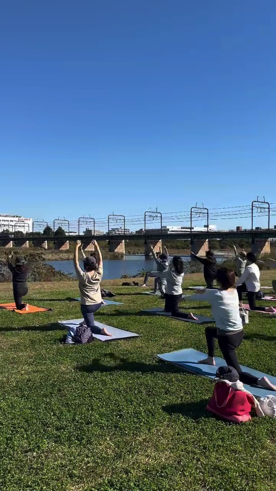

PROGRAM & SCHEDULE
プログラム総合案内・スケジュール
その日の気分と体調に合わせて、インドアもアウトドアも自由に選ぶ。
多摩川の豊かな水辺と自然光あふれるスタジオが織りなす、心と身体を心地よくほどくプログラム。
ポーズの美しさを競うのではなく、自分の呼吸と対話しながら穏やかに整える豊かな毎日をお届けします。

5 PROGRAM CATEGORIES
RIVER PARKの5大プログラム
屋内の快適さと屋外の開放感を兼ね備えたRIVER PARK 聖蹟桜ヶ丘では、大人の心身を整えるプログラムからお子様の習い事、コワーキングまで多彩な時間をお過ごしいただけます。

ヨガ・ピラティス・TRX（スタジオ）
多摩川をパノラマで見渡す約100㎡の自然光スタジオ。自律神経を調律するアロマヨガや陰ヨガから、姿勢と体幹を整えるピラティス、TRXまで全22クラスを開催。
スタジオプログラム詳細を見る ＞
アウトドアフィットネス＆SUP
目の前の多摩川河川敷と水面が舞台。水上の浮遊感を味わうリバーSUPや、季節の風を感じる芝生の上でのパークヨガ、膝腰にやさしいノルディックウォーキング。
アウトドア詳細を見る ＞

会員制ワークラウンジ＆カフェ
多摩川を眼下に望む静かなワークラウンジ。電源・高速Wi-Fi完備でリモートワークや読書に没頭できるほか、運動後のハンドドリップコーヒーやオリジナルプロテインも。
ワークラウンジ詳細を見る ＞
キッズスクール（ボルダリング＆ダンス）
放課後の時間を活用し、小学生を対象に開講するアフタースクール。身体を器用に動かすボルダリングと河川敷でのダンスを通じて、挑戦する心と思いやりを育みます。
キッズスクール詳細を見る ＞FIND YOUR PROGRAM
今の気分とお悩みから選ぶ、目的別プログラム診断
「何を始めればいいか迷っている」「今日の疲れにぴったりのレッスンを受けたい」。
あなたのいまの心身の状態に合わせて、最適なプログラムをお選びいただけます。

アロマリラックスヨガ ／ 陰ヨガ
天然精油の香りに包まれて深い呼吸を繰り返すアロマヨガと、重力に身を委ねて数分間ポーズを保持する陰ヨガ。デスクワークで硬くなった肩甲骨と脳の疲労を優しく解き放ちます。
スタジオ詳細を見る ＞
リラックス＆メディテーション ／ リストラティブヨガ
ボルスターやブランケットに身体を預けて「何もしない時間」を味わう究極の癒しヨガ。副交感神経を優位に切り替え、浅くなりがちな呼吸を深めて上質な夜の眠りをサポートします。
瞑想ヨガ詳細を見る ＞
ピラティスベーシック ／ リラインピラティス ／ TRX
骨盤と背骨の正しい配列（アライメント）を取り戻す深層筋トレーニング。サスペンションを活用するTRXと組み合わせ、身体の軸がスッと通った美しい立ち姿へと導きます。
ピラティス詳細を見る ＞
多摩川リバーSUP ／ RIVER SIDE PARKヨガ
川のせせらぎや土の匂い、爽やかな川風を五感いっぱいに味わうアウトドア。水面を滑るSUPの体幹ワークや春・秋の芝生パークヨガで、日々の閉塞感から一気に解放されます。
アウトドア詳細を見る ＞
はじめてのボルダリング ／ ボルダリング初級
「どのホールドに手足を置くか」をイメージして登るうちに、日々の雑念が吹き飛ぶ爽快感。背中や肩甲骨まわり、指先まで全身の筋肉をバランスよく引き締めます。
ボルダリング詳細を見る ＞
キッズボルダリング ／ キッズダンススクール
登り切ったときの笑顔と仲間への思いやりを育むボルダリング、多摩川河川敷で青空の下リズムに合わせて身体を弾ませるダンス。放課後の挑戦が自信と基礎体力を育みます。
キッズスクール詳細を見る ＞INSTAGRAM REELS
リール動画で見る実際のクラス風景
公式Instagram（@riverpark.tokyo）や担当インストラクターが発信する実際のクラス動画です。スタジオの光の差し込み方や多摩川の空気感をご覧ください。
INTENSITY & BEGINNER GUIDE
運動強度の目安と初心者サポート体制
RIVER PARK 聖蹟桜ヶ丘では、すべてのプログラムに★1〜3の「運動強度」を設定しています。
「身体が硬くてヨガについていけるか不安」「普段あまり運動をしていない」という方も、強度★のクラスから安心してお始めいただけます。
リラックス＆リカバリー中心
呼吸法や座位中心のポーズ、優しいストレッチで心身の緊張をゆるめます。運動が久しぶりの方、自律神経の乱れや不眠が気になる方に最適です。
アライメント＆心地よい運動量
身体の正しい使い方を意識しながら流れるように動き、深層筋（インナーマッスル）を目覚めさせます。肩こり・腰痛の予防や姿勢改善を目指す方におすすめです。
アクティブ＆体幹メイク
太陽礼拝をベースにしたヴィンヤサフローや、TRX・流水SUPでのダイナミックなトレーニング。全身の引き締めと心地よい発汗、爽快な達成感を味わえます。
ヨガマット、ブロック、ベルト、ボルスター、クライミングシューズ、チョークなどの専門備品はすべて無料でレンタルをご利用いただけます。動きやすいウェアとお飲み物をお持ちいただくだけで、手ぶら感覚で気軽にご参加いただけます。
SCHEDULE & RESERVATION
月間スケジュール・Web予約
プログラムの月間スケジュール（PDFカレンダー）をダウンロードしてご確認いただけます。
体験レッスンおよび都度ビジター利用・会員様のご予約は、スポーツクラブNASのWeb予約システムより24時間いつでも承っております。
最新のプログラムスケジュール（PDF）
各曜日の担当インストラクター、スタジオ・アウトドア・ボルダリングのタイムスケジュールをご確認いただけます。
Web予約システム（スポーツクラブNAS）
ご希望の日時・プログラムを選択し、オンラインで即時ご予約いただけます。会員様マイページでの予約変更・キャンセルも可能です。